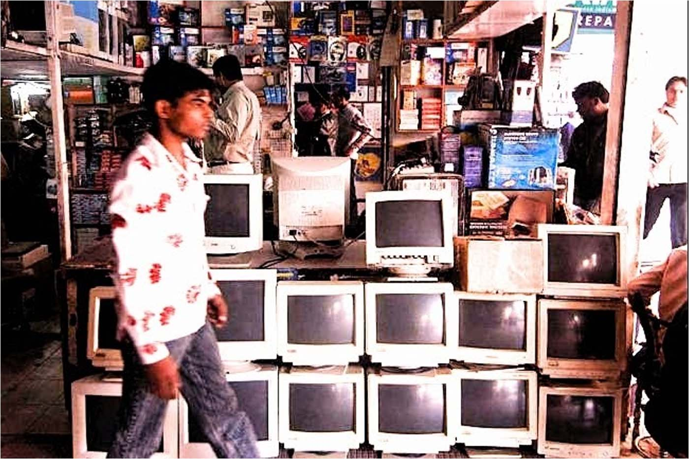

Net Neutrality: No Freebies Allowed
Originally published at https://singularityhacker.com/net-neutrality-no-freebies-allowed

It’s pretty easy to get behind Net Neutrality when it’s positioned as fairness rules that are protecting the people from greedy corporations. Any one who opposes it is immediately met with suspicion. Why would anyone oppose fair treatment with respect to Internet access? It’s assumed that the only plausible explanation for opposing Net Neutrality is that people are being paid off by corporations.
The actual truth is that many technologists of repute with demonstrated knowledge in economics oppose Net Neutrality. Notable names include Marc Andreessen, Scott McNealy, Peter Thiel, David Farber, Nicholas Negroponte, Rajeev Suri, Jeff Pulver, John Perry Barlow, and Bob Kahn, to name just a few.
An exemplary instance of the shortsighted nature of the Net Neutrality position is the thwarting of Facebook’s proposed Free Basics plan in India. Facebook was on the verge of connecting over a billion people to the Internet for free.
What should have been celebrated as a profoundly historic moment was met with suspicion and criticism and, most damaging of all, legal rejection under the auspices of violating Net Neutrality.
How on earth did we get to a place where the strongest Internet advocates are effectively campaigning to block a billion people from connecting to the Net?
Many people are claiming that Facebook’s motives were not philanthropic but rather motivated by profit. My response to such a statement is “No crap!”. Facebook is a publicly traded company with obligations to pursue its own profitability. Suggesting that this negates the benefits being proffered in the Free Basics program means you lack a remedial understanding of economics or business.
The real quandary for advocates of Net Neutrality and critics of the Free Basics program is, what if the same line of reasoning were applied to a hundred other developments in the history of modern technology?
What if, motivated by fairness, we prevented Google from providing the world with a free browser because it was too ‘anticompetitive’?
Amazon makes it possible to wirelessly download eBooks over Whispernet to Kindle e-Readers without allowing users to browse the broader Internet. How is that not a violation of Net Neutrality? Wikipedia, in fact, tried to do the exact same thing by partnering with cellular providers to give the entire world free access to its encyclopedia in the Wikipedia Zero project.
What if Apple wanted to give everyone in the world a free iPhone with the restriction that the only media it could consume would be from the Apple app store and iTunes? Would a proper response be to legally block them from doing so?
The enemies of freedom have effectively blocked the Internet from having the equivalent of a free public television channel. In fact, this is the exact parallel that Zuckerberg makes in his understanding of the role of the program. Read his concise defense of Free Basics here. It’s just awesome.
Andreessen criticized India’s rejection of the Free Basics program and the pundits have said that he offended a billion Indians in doing so. The reality is that a billion Indians weren’t even aware of what he said because they are not yet connected to the global village.
It was indeed a moral affront to oppose the plan and Zuckerberg was right to express his incredulity over its rejection. It couldn’t be truer of any group than the ‘fairness’ nazis to say that everything’s amazing and nobody’s happy.